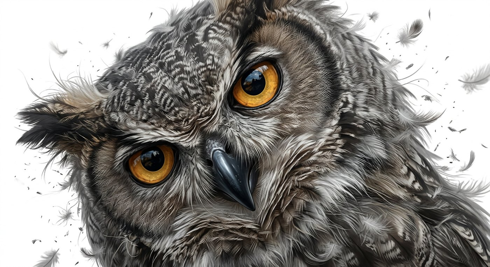

ARTVERSE
MODIFIED BIRDS : OWL №7
SHADY FEATHER STUDY — AREEJ
A R T V E R S E
TOMARF SERIES
BUILD MODE : ON
SPEC : 9L-1BR
INK / DIGITAL — 2026

FEATHER FLOW ↗
AMBER IRIS — 94%
BEAK · GLOSS BLACK
GRUMPY MODE : ON